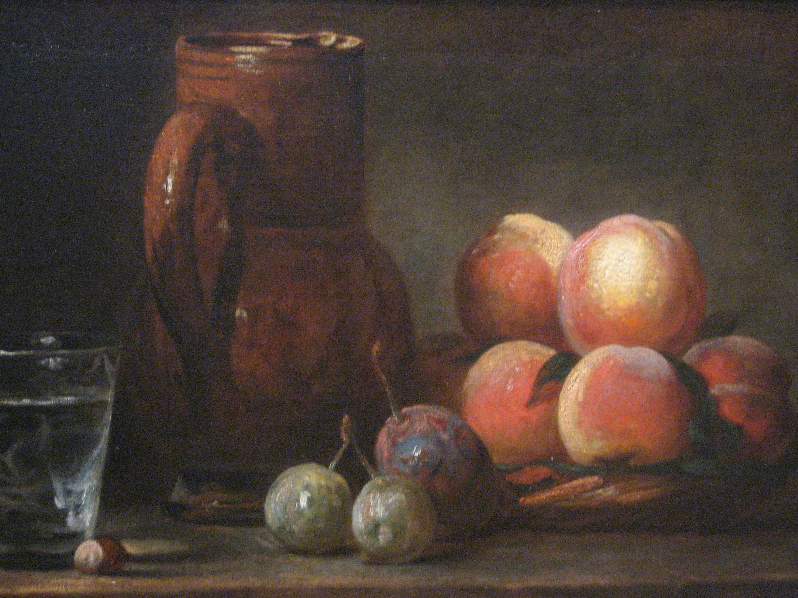
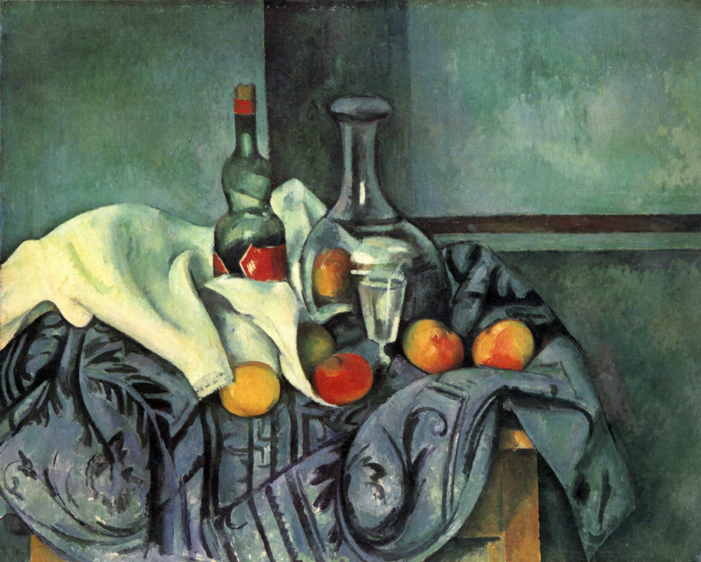
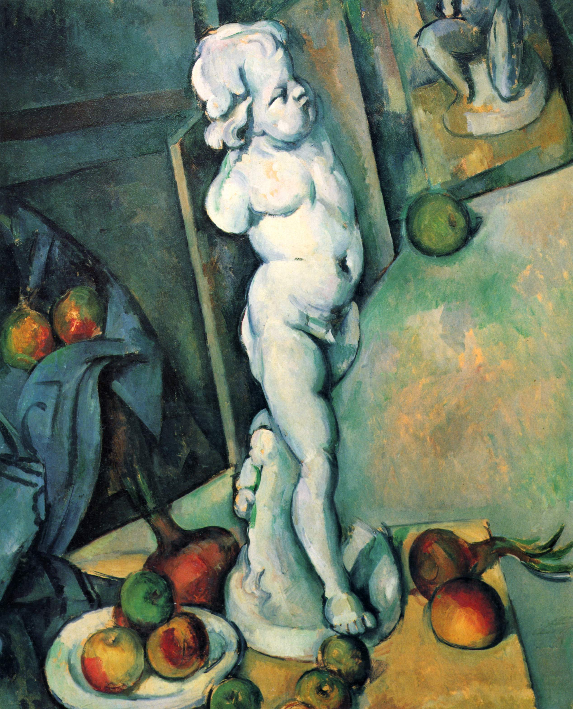

《艺术与观念 – 塞尚》-节选(重燃早年星火)'
文章目录
注：全文摘自《艺术与观念 - 塞尚》
1895年画商沃拉尔为塞尚举办了第一次个人画展，塞尚在静物画领域的杰出成就由此可略见一斑。很多收藏家包括评论家格夫雷，从画商手中购买了塞尚的静物画，整个先锋派也适时地把塞尚平衡、复杂的画作看作静物画体裁的现代范式。1895年，塞尚在这一领域的创作技巧受到了广泛的认可。事实上，沃拉尔举办的塞尚画展收获了众多赞誉，其中一个评论表示，塞尚已经在法国画坛获得了“静物画新大师的地位”。展览中展出的《苹果篮子》（图1）很可能帮助他获得了这些赞誉。迄今为止，在塞尚构图最复杂、最精心的静物画中，这幅作品为他19世纪90年代中期创作的精湛静物画打下了基础。这幅作品现在看来就像是一本关于绘画形式的教科书。
 图1. Paul Cézanne, The Basket of Apples, 1890-1894, Oil on canvas, 65cm × 80 cm, Art Institute of Chicago, Chicago
图1. Paul Cézanne, The Basket of Apples, 1890-1894, Oil on canvas, 65cm × 80 cm, Art Institute of Chicago, Chicago
 图2. Jean Baptiste Simeon Chardin, Still Life with Fruit Jug and a Glass, ~1731, Oil on canvan
 图3. Paul Cézanne, Still Life Peppermint Bottle, 1893-1895, Oil on canvas, 65.7cm × 82 cm, 美国国家艺术馆, 华盛顿  图4. Paul Cézanne, Still Life with Plaster Cupid, ~1895, Oil on canvas, 70cm × 57 cm, 考陶尔德艺术学院画廊 Courtauld Institute of Art, 伦敦